1. Lecture Objectives
This lecture dives into different forms of autoencoders and their applications, specifically focusing on regularized autoencoders, including sparse autoencoders, denoising autoencoders, and variational autoencoders. Regularized autoencoders gain distinct properties by introducing constraints through various forms of regularization, enhancing their versatility for tasks such as data compression, feature extraction, noise removal, and new content generation.
First, we examine sparse autoencoders, which encourage only a few neurons to activate for each input, resulting in compact representations that highlight essential data features. Another example is denoising autoencoders, designed to reconstruct clean data from noisy inputs, making them effective for tasks like noise removal. Finally, we explore variational autoencoders, which employ probabilistic techniques to create smooth, flexible data representations, enabling the generation of new samples with characteristics similar to the original data.
2. Regularized Autoencoders
While basic autoencoders are effective at learning compressed representations, they often struggle with overfitting and may learn trivial identity mappings when the model has sufficient capacity. As neural networks became larger and more expressive, these limitations motivated the development of regularized autoencoder variants.
Regularized autoencoders introduce additional constraints that encourage the model to learn meaningful and robust features rather than simply memorizing the training data. In this section, we explore several important extensions, including sparse autoencoders, denoising autoencoders, and variational autoencoders, which improve generalization and enable autoencoders to handle more complex real-world tasks.
2.1 Regularized Autoencoders Overview
Basic autoencoders rely on a low-dimensional bottleneck to force the network to learn compressed representations of the data. However, modern neural networks often have enough capacity to bypass this constraint and learn a trivial identity mapping, simply copying the input to the output without extracting meaningful structure. Regularized autoencoders address this limitation by encouraging the model to learn informative representations through explicit constraints on the learning process rather than relying solely on dimensionality reduction.
The key idea is that compression is enforced through regularization instead of a small latent space. This allows the latent representation \(Z\) to be high-dimensional while still capturing useful and generalizable features. By constraining how the encoder and decoder learn, the model is encouraged to discover structure in the data rather than memorize the training set. In this lecture, we study three major regularization strategies: sparse autoencoders, denoising autoencoders, and variational autoencoders.
The objective of regularization is to prevent the encoder–decoder network from learning a direct 1:1 mapping between the input and the output. Without regularization, a high-capacity autoencoder can “cheat” by memorizing the training data instead of learning meaningful patterns. This is analogous to memorizing answers for an exam without understanding the underlying concepts. Regularization forces the model to extract structure and learn features that generalize to new data.
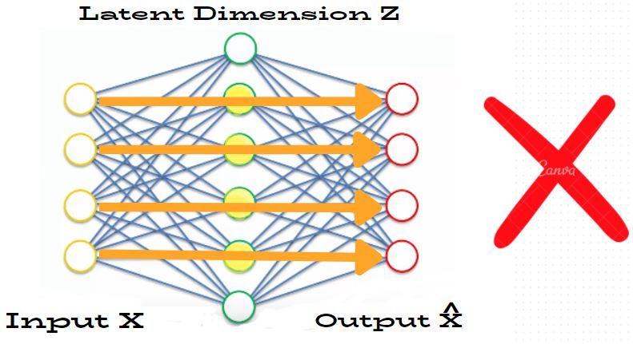
2.1.0.1 Key Takeaways
Regularized autoencoders can use high-dimensional latent spaces. Representation quality is enforced by regularization rather than by a dimensional bottleneck.
Regularization discourages redundant or trivial features and improves the model’s ability to generalize to unseen data.
2.2 Sparse Autoencoders
Sparse autoencoders encourage the network to activate only a small subset of neurons for any given input. Instead of forcing compression through a small latent dimension, sparsity forces the model to represent each input using only a few active features. This encourages the network to discover distinctive and interpretable patterns in the data.
The key idea is that even if the latent space is large, the model is restricted in how many neurons it can use at once. As a result, the autoencoder cannot simply copy the input using all available neurons and must instead learn a compact set of meaningful features.
2.2.0.1 Motivation.
Sparse representations are widely used in machine learning and neuroscience because they tend to capture the most informative structure in data. By activating only a subset of neurons during each forward pass, the model is prevented from memorizing the input and is encouraged to learn reusable features that are useful for downstream tasks such as classification and clustering.
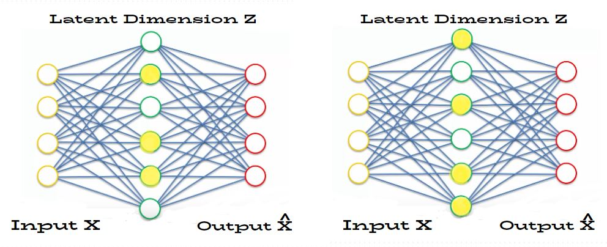
2.2.0.2 How sparsity is enforced.
Sparse autoencoders introduce a regularization term into the loss function: \[\mathcal{L}_{\text{total}} = \mathcal{L}_{\text{reconstruction}} + \lambda \, \Omega(Z)\] Here, \(\mathcal{L}_{\text{reconstruction}}\) measures how accurately the decoder reconstructs the input, \(\Omega(Z)\) is a sparsity-promoting penalty applied to the latent representation \(Z\), and \(\lambda > 0\) controls the tradeoff between reconstruction quality and sparsity. A larger value of \(\lambda\) places more emphasis on sparsity, while a smaller value prioritizes reconstruction accuracy.
In other words, the model is no longer rewarded only for reconstructing well. It is also penalized if too many latent units are active. This prevents the latent representation from becoming a dense copy of the input and instead encourages the network to encode the input using only a small set of informative features.
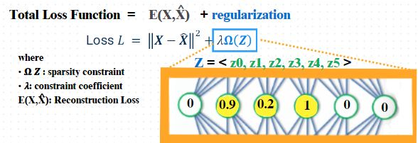
Figure 18.3 illustrates this idea visually, but the key mathematical point is that sparsity is enforced by augmenting the reconstruction objective with an additional penalty term. Two common techniques are used to define \(\Omega(Z)\).
2.2.0.3 L1 Regularization on Activations.
One simple method is to apply an \(L_1\) penalty directly to the latent activations: \[\Omega(Z) = \sum_{i=1}^{d} |z_i|\] where \(d\) is the latent dimension and \(z_i\) is the \(i\)-th latent activation for a given input. This regularizer measures the total absolute magnitude of the latent activations.
Substituting this into the sparse autoencoder objective gives: \[\mathcal{L}_{\text{total}} = \mathcal{L}_{\text{reconstruction}} + \lambda \sum_{i=1}^{d} |z_i|\]
This equation shows that the model is penalized whenever many latent coordinates are active or when their magnitudes become too large. The \(L_1\) norm is well known for encouraging sparsity, so the network learns to keep most activations close to zero and rely on only a few neurons for each input. As a result, the learned representation becomes compact and selective rather than dense and redundant.
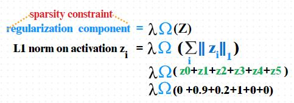
Figure 18.4 provides the geometric intuition behind the \(L_1\) penalty. In the sparse autoencoder setting, the practical consequence is that different inputs activate different small subsets of latent units rather than spreading information across all neurons.
2.2.0.4 KL-Divergence Sparsity Constraint.
Another common approach is to control the average activation of each neuron across the training set. Let \[\hat{\rho}_j = \frac{1}{N}\sum_{n=1}^{N} a_j\!\left(x^{(n)}\right)\] denote the empirical average activation of latent neuron \(j\), where \(a_j(x^{(n)})\) is the activation of neuron \(j\) for the \(n\)-th training example and \(N\) is the number of training samples.
We then choose a small target sparsity level \(\rho\) (for example, \(\rho = 0.05\)) and encourage each neuron to satisfy \[\hat{\rho}_j \approx \rho.\] Here, \(\rho\) is the desired average activation level, while \(\hat{\rho}_j\) is the actual average activation observed during training. If \(\hat{\rho}_j\) becomes much larger than \(\rho\), then neuron \(j\) is being used too frequently and should be penalized.
This can be enforced using a KL-divergence penalty: \[\Omega(Z) = \sum_{j=1}^{d} D_{KL}(\rho \,\|\, \hat{\rho}_j)\] where \[D_{KL}(\rho \,\|\, \hat{\rho}_j) = \rho \log\frac{\rho}{\hat{\rho}_j} + (1-\rho)\log\frac{1-\rho}{1-\hat{\rho}_j}.\]
The total objective therefore becomes \[\mathcal{L}_{\text{total}} = \mathcal{L}_{\text{reconstruction}} + \lambda \sum_{j=1}^{d} D_{KL}(\rho \,\|\, \hat{\rho}_j).\]
This equation penalizes the model when the average activation of a latent neuron deviates too far from the desired sparsity level. Unlike the \(L_1\) penalty, which acts directly on the activations of each individual input, the KL-based penalty acts on the average behavior of each neuron across the dataset. This encourages neurons to be active only rarely, which leads to specialization and a sparse but still distributed representation.
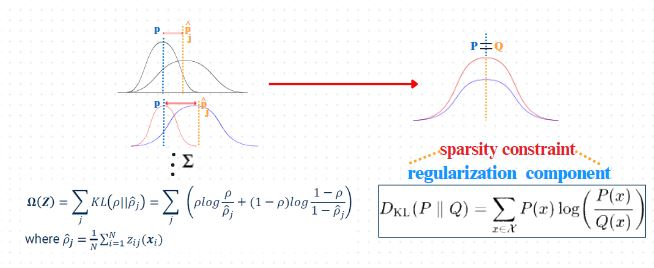
Figure 18.5 provides the intuition for the KL penalty. In practice, this encourages each latent neuron to specialize in detecting only certain structures or patterns, resulting in a sparse but still distributed representation.
2.2.0.5 Training.
During training, the reconstruction loss and sparsity penalty are optimized jointly. The strength of the sparsity constraint is controlled by the hyperparameter \(\lambda\), which determines how strongly sparsity is enforced.
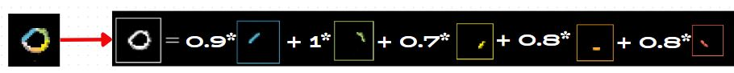
2.2.0.6 Key Takeaways:
Sparse autoencoders learn representations using only a small number of active neurons.
Sparsity encourages feature discovery, noise reduction, and better generalization.
Sparsity can be enforced using \(L_1\) penalties or KL-divergence constraints on activations.
2.3 Denoising Autoencoders
Denoising autoencoders learn robust representations by training the model to reconstruct clean inputs from corrupted versions. Instead of simply copying the input, the network must learn the underlying structure of the data in order to remove noise. This encourages the encoder to capture stable and meaningful features that are useful even when the input is partially corrupted.
2.3.0.1 Objective
The goal of a denoising autoencoder is to learn features that can remove noise from corrupted data. During training, noise is intentionally added to the input, and the model is asked to reconstruct the original clean version. Because the model never sees the clean input directly, it must learn the true structure of the data rather than memorizing pixel-level details.
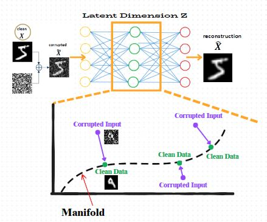
A useful way to understand denoising autoencoders is through the concept of a data manifold. Real-world data often lies on a lower-dimensional, smooth manifold embedded in a high-dimensional space. Clean data points lie on this manifold, while noisy or corrupted inputs are pushed away from it. The denoising autoencoder learns to map corrupted inputs back to the nearest point on the learned manifold, effectively pulling noisy samples toward the region where true data lives.
2.3.0.2 Training Process
During training, the input \(X\) is first corrupted to produce a noisy version \(\tilde{X}\). The encoder receives \(\tilde{X}\), not \(X\), and the decoder is trained to reconstruct the original clean input: \[\hat{X} = G_\phi(E_\theta(\tilde{X})).\] Here, \(E_\theta(\cdot)\) denotes the encoder with parameters \(\theta\), \(G_\phi(\cdot)\) denotes the decoder with parameters \(\phi\), \(\tilde{X}\) is the corrupted input, and \(\hat{X}\) is the reconstruction of the original clean sample \(X\).
A more complete way to write this is to introduce a corruption process \(q_D(\tilde{X}\mid X)\), which defines how noise is added to the clean input. The denoising autoencoder then minimizes the expected reconstruction loss: \[\mathcal{L}_{\text{DAE}} = \mathbb{E}_{\tilde{X}\sim q_D(\tilde{X}\mid X)} \left[ \|X-\hat{X}\|_2^2 \right]\] with \[\hat{X} = G_\phi(E_\theta(\tilde{X})).\]
In this objective, the expectation is taken over corrupted versions of the same clean input. The squared error term \(\|X-\hat{X}\|_2^2\) measures how closely the decoder recovers the original clean sample from its noisy version. Thus, the model is trained not to reproduce what it sees, but to infer the underlying clean structure from a corrupted observation.
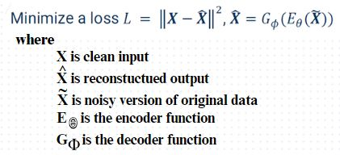
Figure 18.8 shows this objective visually. The important mathematical idea is that the network is not rewarded for simply reproducing its input. Instead, it must infer the clean underlying structure from a corrupted observation. This is why denoising acts as a form of regularization and leads to more robust latent features.
2.3.0.3 Why Denoising Works
By learning to remove noise, the model is forced to capture stable patterns that are shared across many examples. This acts as a powerful form of regularization. The learned representation becomes robust to perturbations, small variations, and measurement errors.
2.3.0.4 Use Cases and Limitations
Denoising autoencoders are widely used in image restoration, signal processing, and representation learning for noisy datasets. They are especially useful when real-world data is imperfect or corrupted.
However, denoising autoencoders do not impose strong structure on the latent space. If we randomly sample points from the latent space, there is no guarantee that they will decode into realistic data. This limitation motivates the development of variational autoencoders, which explicitly structure the latent space for generative modeling.
2.4 Variational Autoencoders
Variational Autoencoders (VAEs) extend traditional autoencoders by combining representation learning with generative modeling. While standard autoencoders learn how to compress and reconstruct data, they do not impose structure on the latent space. As a result, randomly sampling from the latent space often produces unrealistic outputs. VAEs solve this problem by learning a probabilistic latent space that is continuous, smooth, and suitable for generation.
2.4.0.1 Probabilistic Latent Space
Instead of encoding each input as a single point in latent space, a VAE encodes each input as a distribution. The encoder outputs the mean \(\mu\) and variance \(\sigma^2\) of a Gaussian distribution that represents where the data point is likely to lie in the latent space.

Sampling from these distributions produces latent points that are close to one another in a continuous manner. This continuity allows smooth interpolation between data points and enables the model to generate realistic new samples.
2.4.0.2 Generative Modeling View
VAEs model the data using a latent-variable generative process. First, a latent code is sampled from a prior distribution: \[Z \sim p(Z),\] and then an observation is generated from the decoder likelihood: \[X \sim p_\phi(X|Z).\]
Equivalently, the joint distribution can be written as \[p_\phi(X,Z)=p(Z)\,p_\phi(X|Z).\] Here, \(p(Z)\) is the prior distribution over latent variables, \(p_\phi(X|Z)\) is the decoder likelihood that describes how data is generated from a latent code, and \(p_\phi(X,Z)\) is the joint probability of simultaneously observing both \(X\) and \(Z\).
The prior \(p(Z)\) is usually chosen to be a standard Gaussian: \[p(Z)=\mathcal{N}(0,I),\] because it is simple to sample from and encourages a smooth latent space.
To evaluate how likely an observed data point \(X\) is under the model, we marginalize over all possible latent variables: \[p_\phi(X)=\int p_\phi(X,Z)\,dZ = \int p(Z)\,p_\phi(X|Z)\,dZ.\]
This equation says that the probability of observing \(X\) is obtained by summing, or more precisely integrating, over all latent codes \(Z\) that could have generated it. This marginal likelihood is the quantity we would ideally like to maximize during training, because doing so encourages the model to assign high probability to the observed data and thus learn to generate realistic samples.
2.4.0.3 Why Direct Likelihood is Intractable
The main difficulty is that the marginal likelihood \[p_\phi(X)=\int p(Z)\,p_\phi(X|Z)\,dZ\] requires us to integrate over all possible latent values \(Z\) that could explain the observed data point \(X\). In other words, even for a single input \(X\), there is not just one possible latent explanation. There may be infinitely many candidate latent codes \(Z\) that could plausibly generate the same observation.
This is similar in spirit to the intuition behind Figure 18.2, where multiple possible feature activations may contribute to a representation. Here, however, the issue is probabilistic: instead of choosing one latent code, we must consider every possible latent code and weigh how likely each one is under the prior \(p(Z)\) and the decoder likelihood \(p_\phi(X|Z)\).
In low-dimensional settings, such an integral may sometimes be manageable, but in high-dimensional latent spaces there are infinitely many candidate latent configurations, and the integral typically has no closed-form solution. Therefore, directly computing \[p_\phi(X)=\int p(Z)\,p_\phi(X|Z)\,dZ\] is generally intractable.
This also makes the true posterior distribution difficult to compute: \[p_\phi(Z|X)=\frac{p_\phi(X|Z)p(Z)}{p_\phi(X)}.\] The denominator \(p_\phi(X)\) is exactly the same intractable marginal likelihood above. Therefore, if we cannot compute \(p_\phi(X)\), then we also cannot compute the exact posterior efficiently.
VAEs address this problem by introducing an approximate posterior distribution \(q_\theta(Z|X)\) and replacing exact inference with a tractable optimization procedure called variational inference.
2.4.0.4 Variational Inference and the ELBO
Since the true posterior \(p_\phi(Z|X)\) is intractable, VAEs introduce an approximate posterior \(q_\theta(Z|X)\), parameterized by the encoder. This approximation is chosen from a simpler family of distributions, and the goal is to make it as close as possible to the true posterior.
This idea is called variational inference. Instead of trying to compute the exact posterior \(p_\phi(Z|X)\) directly, variational inference replaces it with a simpler distribution \(q_\theta(Z|X)\) and then optimizes the parameters of that distribution so that it approximates the true posterior as closely as possible.
Rather than maximizing \(\log p_\phi(X)\) directly, we maximize a tractable lower bound called the Evidence Lower Bound (ELBO): \[\mathcal{L}_{\text{ELBO}}(X) = \mathbb{E}_{q_\theta(Z|X)}[\log p_\phi(X|Z)] - D_{KL}\!\left(q_\theta(Z|X)\|p(Z)\right).\]
Here, \(q_\theta(Z|X)\) is the encoder distribution, \(p_\phi(X|Z)\) is the decoder likelihood, and \(p(Z)\) is the latent prior. The expectation \(\mathbb{E}_{q_\theta(Z|X)}[\cdot]\) means that the reconstruction quality is averaged over latent samples drawn from the encoder distribution.
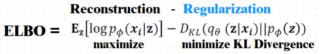
Unlike a standard autoencoder that maps each input to a single latent vector, a VAE maps each input to a distribution in latent space, meaning that one observed sample can have many plausible latent explanations.
This objective has two components: \[\mathcal{L}_{\text{ELBO}}(X) = \underbrace{\mathbb{E}_{q_\theta(Z|X)}[\log p_\phi(X|Z)]}_{\text{reconstruction / likelihood term}} - \underbrace{D_{KL}\!\left(q_\theta(Z|X)\|p(Z)\right)}_{\text{regularization term}}.\]
The first term is the reconstruction term, which is also the decoder likelihood function. This plays a role similar to likelihood functions studied earlier in probabilistic models such as Naive Bayes, where we evaluate how probable the observed data is under a model. Here, the decoder learns to assign high likelihood to the observed data \(X\) given the latent variable \(Z\), which encourages accurate reconstruction.
The second term is the regularization term, which is a KL divergence. This connects to earlier discussions of KL divergence as a measure of how different two distributions are, such as in clustering and distribution comparison. Here, the KL term forces the encoder distribution \(q_\theta(Z|X)\) to remain close to the prior \(p(Z)\). This prevents the latent space from becoming irregular or fragmented and instead encourages a smooth and well-structured latent representation.
Thus, the ELBO can be interpreted as balancing two goals: maximizing likelihood (good reconstruction) while minimizing distribution mismatch (good latent structure). In this way, variational inference turns an intractable probabilistic inference problem into an optimization problem: instead of computing the exact posterior, we optimize the ELBO so that \(q_\theta(Z|X)\) becomes a useful approximation to \(p_\phi(Z|X)\).
2.4.0.5 Reparameterization Trick
Training VAEs requires gradients to pass through the sampling step. However, direct sampling \[Z \sim \mathcal{N}(\mu,\sigma^2)\] introduces stochasticity in a way that prevents standard backpropagation through \(\mu\) and \(\sigma\). Here, \(\mu\) and \(\sigma^2\) are the mean and variance predicted by the encoder for a given input.
To resolve this, VAEs use the reparameterization trick, rewriting the latent sample as \[Z = \mu + \sigma \odot \epsilon, \qquad \epsilon \sim \mathcal{N}(0,I),\] where \(\epsilon\) contains the randomness and \(\mu,\sigma\) are deterministic outputs of the encoder.
In this form, the randomness is isolated in \(\epsilon\), while \(Z\) becomes a differentiable function of \(\mu\) and \(\sigma\). This allows gradients to flow through the encoder parameters during training, making end-to-end optimization with backpropagation possible.
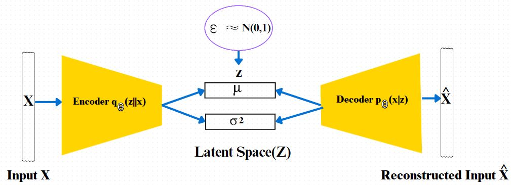
2.4.0.6 Reconstruction and Generation Modes
Because the latent space is probabilistic and structured, VAEs support two modes of operation. During reconstruction, an input is encoded into a distribution and decoded back to recreate the original data. During generation, we bypass the encoder and directly sample from the latent prior to create new data.
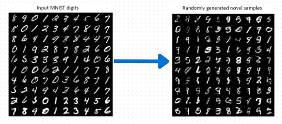
2.4.0.7 Smooth Interpolation in Latent Space
The Gaussian prior encourages nearby latent points to decode into similar outputs. Moving smoothly through latent space therefore produces gradual and realistic changes in generated data.
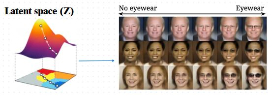
2.4.0.8 Key Advantages
VAEs provide a principled framework for learning meaningful latent representations while enabling realistic data generation. They support interpolation, anomaly detection, and unsupervised representation learning, making them a powerful extension of traditional autoencoders.
3. Summary
Regularized autoencoders extend basic autoencoders by introducing constraints that prevent trivial identity mapping and encourage meaningful feature learning.
3.0.0.1 Key Takeaways
Basic autoencoders rely on dimensional bottlenecks, while regularized autoencoders enforce structure through additional loss terms.
Sparse autoencoders encourage feature discovery by activating only a small subset of neurons.
Denoising autoencoders learn robust representations by reconstructing clean data from corrupted inputs.
Variational autoencoders (VAEs) introduce a probabilistic latent space, enabling generation of new data and smooth interpolation.
Regularized autoencoders are widely used for representation learning, dimensionality reduction, anomaly detection, and generative modeling.
5. References
See Figure 18.1 for the image adapted from Yadav, S. (n.d.). Overfitting and regularization in machine learning. Towards Data Science. https://towardsdatascience.com/over-fitting-and-regularization-64d16100f45c
See Figures 18.2 and 18.3 for the image adapted from Data School. (n.d.). Autoencoders in deep learning [Video]. YouTube. https://www.youtube.com/watch?v=CiexUMrNtBQ
See Figure 18.4 for the image adapted from StatQuest with Josh Starmer. (n.d.). Regularization and overfitting [Video]. YouTube. https://www.youtube.com/watch?v=xwrzh4e8DLs
See Figure 18.5 for the image adapted from Chorri, M. (n.d.). Difference between KL divergence and PSI. Medium. https://medium.com/@mumbaiyachori/difference-between-kl-divergence-and-psi-e7d9aa0ade12
See Figure 18.6 for the image adapted from Saturn Cloud. (n.d.). Sparse autoencoders. https://saturncloud.io/glossary/sparse-autoencoders/
See Figures 18.7 and 18.8 for the image adapted from 3Blue1Brown. (n.d.). Neural networks: How they work [Video]. YouTube. https://www.youtube.com/watch?v=aircAruvnKk
See Figure 18.9 for the image adapted from Abdelli, K., Griesser, H., Neumeyr, C., et al. (2022, November). Degradation Prediction of Semiconductor Lasers using Conditional Variational Autoencoder (preprint available via ResearchGate). https://www.researchgate.net/figure/Structure-of-the-variational-autoencoder-VAE_fig1_365190062
See Figures 18.10 and 18.11 for the image adapted from Krasser, F. (2018). Latent space optimization. https://krasserm.github.io/2018/04/07/latent-space-optimization/
See Figure 18.12 for the image adapted from Bose, S. (n.d.). Comparison of autoencoders vs. variational autoencoders. Medium. https://medium.com/@jwbtmf/comparison-of-autoencoders-vs-variational-autoencoders-7993442bb377
See Figure 18.13 for the image adapted from Van Rensburg, E. (n.d.). Generating the intuition behind variational autoencoders (VAEs). Medium. https://medium.com/@elzettevanrensburg/generating-the-intuition-behind-variational-auto-encoders-vaes-c7d2f8631a87
Schafer, A. (n.d.). L1 norm, regularization, and sparsity explained for dummies. ML Review. https://blog.mlreview.com/l1-norm-regularization-and-sparsity-explained-for-dummies-5b0e4be3938a
Rathi, M. (n.d.). Neural network terminology explained. Mukul Rathi. https://mukulrathi.com/demystifying-deep-learning/neural-network-terminology-explained/
Two Minute Papers. (n.d.). The future of deep learning research [Video]. YouTube. https://www.youtube.com/watch?v=b8AzCgY1gZI
deeplearning.ai. (n.d.). Deep learning explained [Video]. YouTube. https://www.youtube.com/watch?v=2859tNY-G5E
Mandal, S. (n.d.). Difference between overfitting and underfitting in machine learning. Medium. https://medium.com/@soumallya160/difference-of-overfitting-underfitting-7f0bd08fb8a6
Kingma, D. P., and Welling, M. (2014). Auto-Encoding Variational Bayes. International Conference on Learning Representations (ICLR). https://arxiv.org/abs/1312.6114
Murphy, K. P. (2022). Probabilistic Machine Learning: An Introduction. MIT Press.
Bishop, C. M. (2006). Pattern Recognition and Machine Learning. Springer.